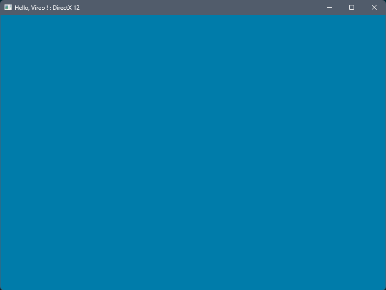

|
Vireo
0.0
Vireo 3D Rendering Hardware Interface
|
|
Vireo
0.0
Vireo 3D Rendering Hardware Interface
|
A render pass consists of a list of commands submitted to the GPU to draw into various frame buffers also named attachments. In this tutorial we will directly draw into the swap chain frame buffers.
To configure the attachments and the render pass we have to create a RenderingConfiguration. Add a configuration object to your application class:
We declare in this object one frame buffer as a color attachment. The only parameter for this attachment is the RGBA color used to clear the frame buffer before drawing (we need it to be different from the default black color to visually control that the frame buffer clearing is effective).
Since we will render directly into the swap chain we need to set the color attachment target just after the swap chain creation with vireo::Vireo::createSwapChain :
In the onRender() method we can start the render pass between the swap chain barriers:
After the white then the black window we now have a blue window : 
Next : Viewports and scissors
Related manual page : Render pass
 1.7.0
1.7.0